Tus mejores momentos, listos para TikTok en segundos.
FORZIN CLIPS graba tu directo o captura el de Kick, YouTube o Twitch, guarda con un botón la jugada que acaba de pasar (y la reacción que viene después) y la convierte en un clip vertical con textos, listo para publicar en todas tus redes.
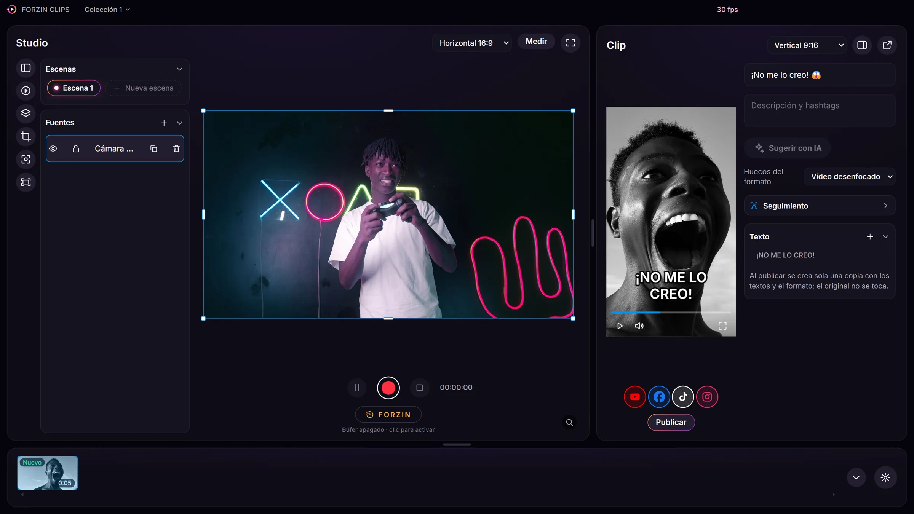
Cómo funciona
De tu directo a tus redes en 3 pasos
Sin editores complicados ni subir archivos a mano.
Graba o pulsa FORZIN
Graba tu pantalla, una ventana, tu cámara o un directo de Kick, YouTube o Twitch. ¿Pasó algo épico? Pulsa FORZIN (en el PC, el celular o el Stream Dock) y guarda lo que pasó y lo que sigue.
Prepara el clip
Pásalo a vertical 9:16, mueve y escala el vídeo, rellena con fondo desenfocado, añade textos con estilo y deja que el seguimiento encuadre a la persona.
Publica en un clic
Elige tus redes y pulsa Publicar: YouTube Shorts, TikTok, Facebook Reels e Instagram Reels. Si se corta Internet, la subida sigue sola.
Momentos en directo
Mientras tu chat enloquece, FORZIN guarda la jugada
Un botón y los últimos minutos de tu directo pasan a ser un clip.
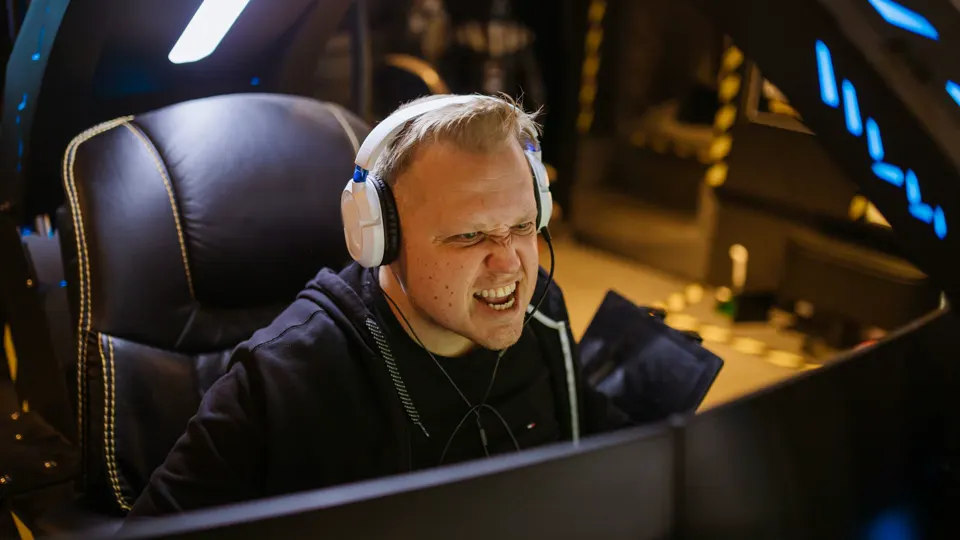
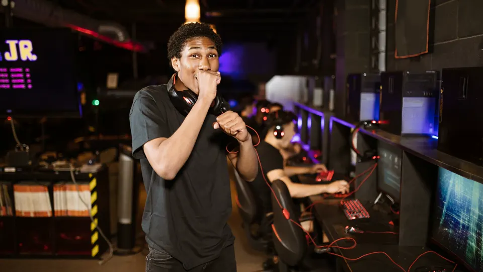
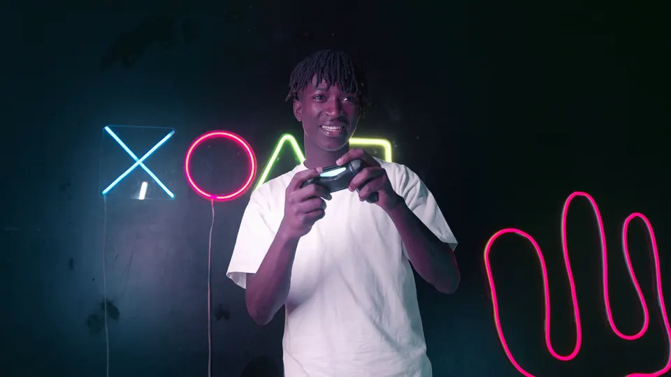
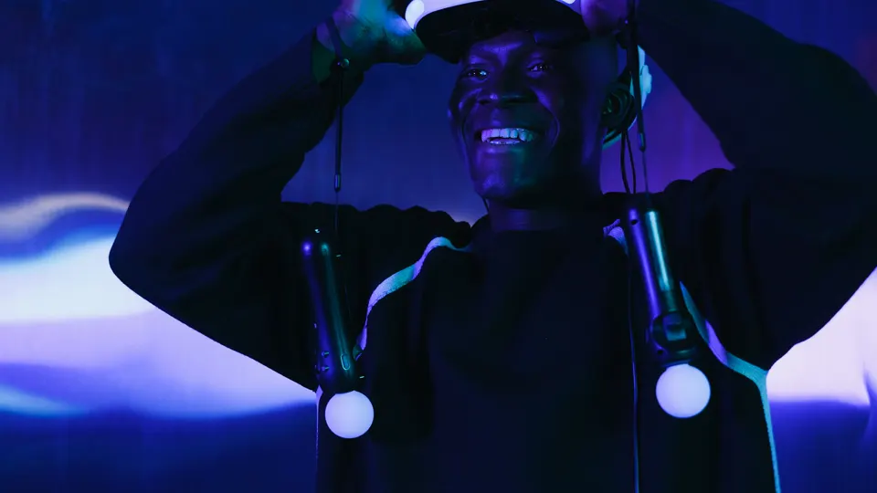
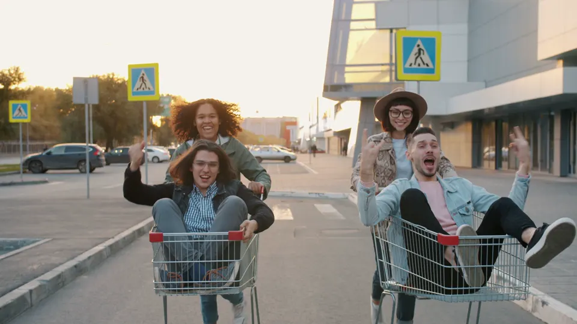
Fotos de ejemplo de Pexels. Las personas que aparecen no tienen relación con FORZIN CLIPS.
Novedades
Clips de cualquier directo, desde tu PC o tu celular
FORZIN vigila los canales que tú elijas y guarda los mejores momentos aunque no estés frente al PC.
Directos de Kick, YouTube y Twitch
Añade canales por nombre o enlace. Cuando entran en directo, FORZIN te avisa y los captura en el Studio (YouTube y Twitch, con su reproductor oficial).
FORZIN Móvil
Desde tu celular y con cualquier red: avisos, el botón FORZIN, los clips automáticos y aprobar o publicar cada clip.
Antes y después del botón
FORZIN guarda lo que pasó y también la reacción que viene después. Pulsa otra vez para alargar el clip, sin repetir escenas.
Clips automáticos con IA local
Risas, aplausos y temas interesantes se convierten en clips solos, con título y subtítulos, y la IA trabaja en tu propio PC.
Sonido limpio
El sonido del directo entra siempre al clip y tú eliges si lo escuchas. Sin ecos ni sonido doble mientras capturas.
Stream Dock
Teclas para FORZIN, grabar, escenas, micrófono, sonido del directo, ✦ automático, transmitir, cambiar de directo y publicar.
Funciones
Todo lo que necesitas para tus clips
Capturas reales de la aplicación.
Studio
Tu lienzo de grabación, con escenas y fuentes como en tu software de directo favorito.
- Pantalla, ventana, cámara e imágenes en un mismo lienzo
- Micrófono y audio del sistema con controles flotantes
- Botón FORZIN: guarda los últimos minutos aunque no estuvieras grabando
- Formatos horizontal, vertical y cuadrado
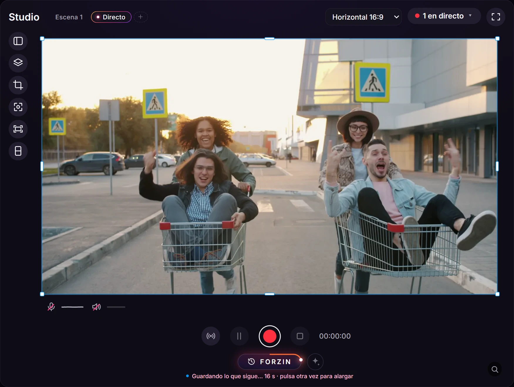
Botón FORZIN
Guarda el momento aunque no estuvieras grabando: lo que pasó y la reacción que viene después.
- Solo lo anterior, antes y después o personalizado
- El aro se pone naranja mientras guarda lo que sigue
- Pulsa otra vez para alargar el clip, sin repetir escenas
- También con Ctrl+Shift+F, el Stream Dock o el celular
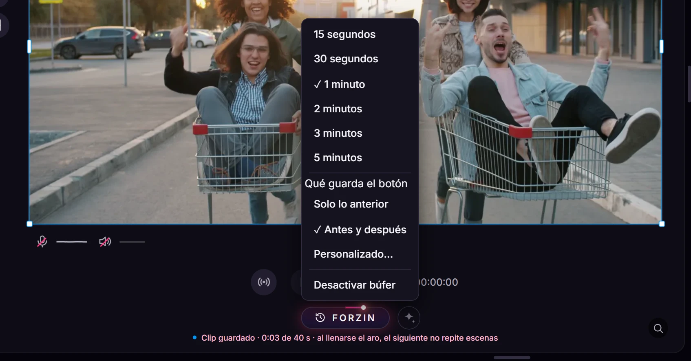
Voz FORZIN
Filtros profesionales para tu micrófono con un clic, en tiempo real.
- Estilos: Natural, Podcast, Streamer, Radio, Sala ruidosa
- Limpieza de ruido con IA y puerta de ruido
- Ecualizador y compresor para una voz pareja
- Guarda tus propias configuraciones
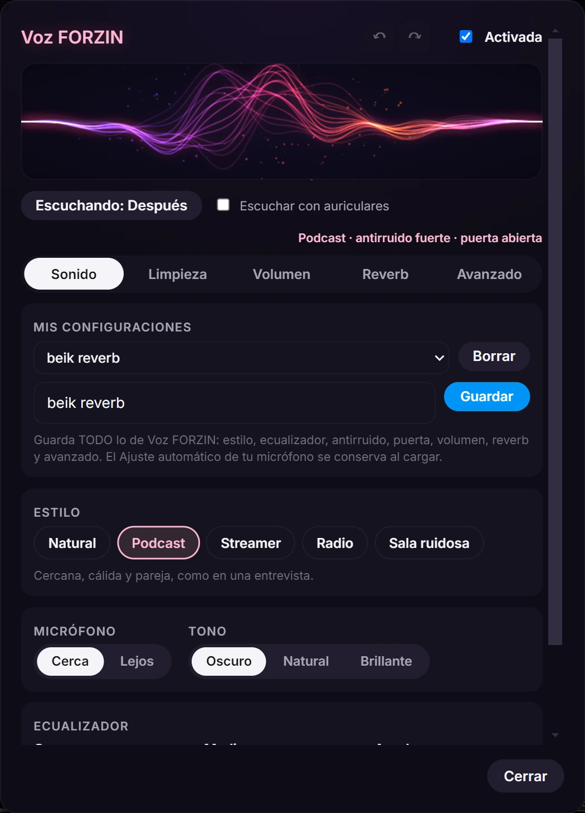
Reverb FORZIN
Dale a tu voz el sonido de una sala, con una vista en 3D del espacio.
- Estilos listos y perillas de filtro, espacio, cola y mezcla
- Cantidad de efecto en un control
- Se deshace todo con Ctrl+Z
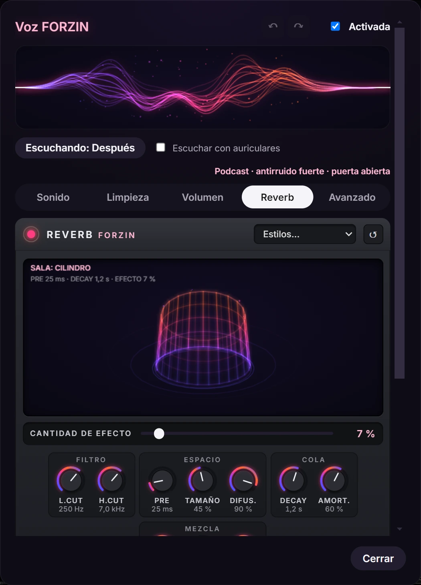
Dividido y seguimiento
Dos personas en un clip vertical: un marco arriba y otro abajo, cada uno siguiendo a su persona.
- 1 persona o 2 personas
- Cada marco Fijo o «Sigue» (va detrás de un rostro)
- Dibuja los marcos arrastrando sobre el lienzo
- La grabación sigue entera
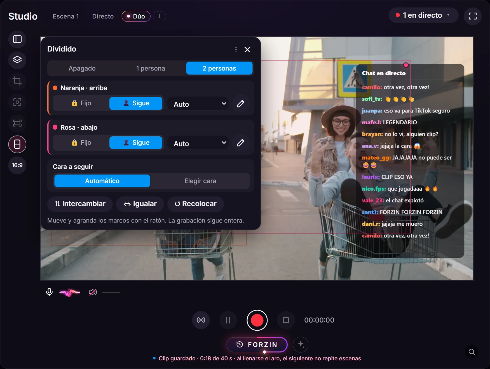
FORZIN Móvil
Controla FORZIN desde tu celular, con cualquier red.
- Avisos cuando un canal de Kick, YouTube o Twitch entra en directo
- Ves el directo, pulsas FORZIN y activas los clips automáticos
- Apruebas, pones título y publicas cada clip
- Conexión segura con tu PC, sin abrir puertos
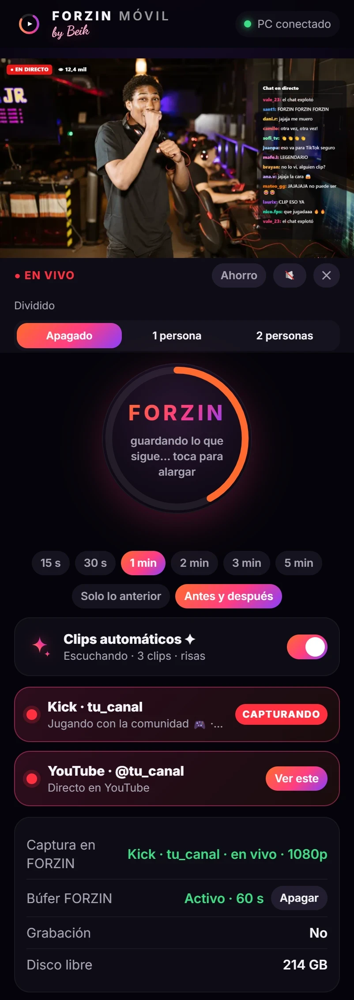
Stream Dock
Cada función en una tecla, con su estado a la vista.
- FORZIN, grabar, pausar, escenas y micrófono
- Sonido del directo, audio del PC y clips automáticos
- Transmitir, cambiar de directo y publicar el último clip
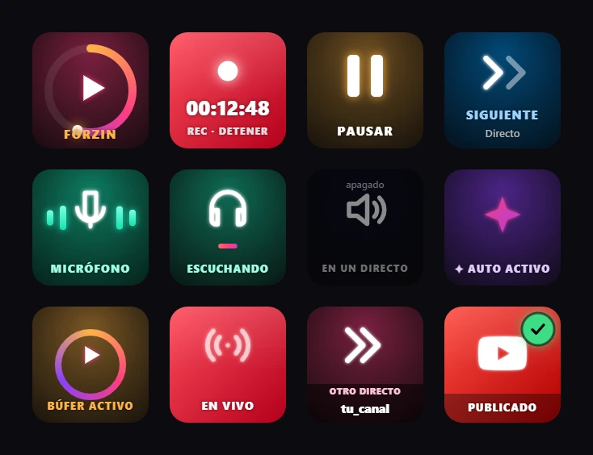
Clips verticales
Convierte cualquier grabación en un Short o un Reel sin salir de la app.
- Formatos 9:16, 1:1, 16:9 y 4:5
- Mueve y escala el vídeo directamente sobre el reproductor
- Huecos en negro o con el vídeo desenfocado
- Textos con estilos: TikTok, neón, caja, palabra resaltada…
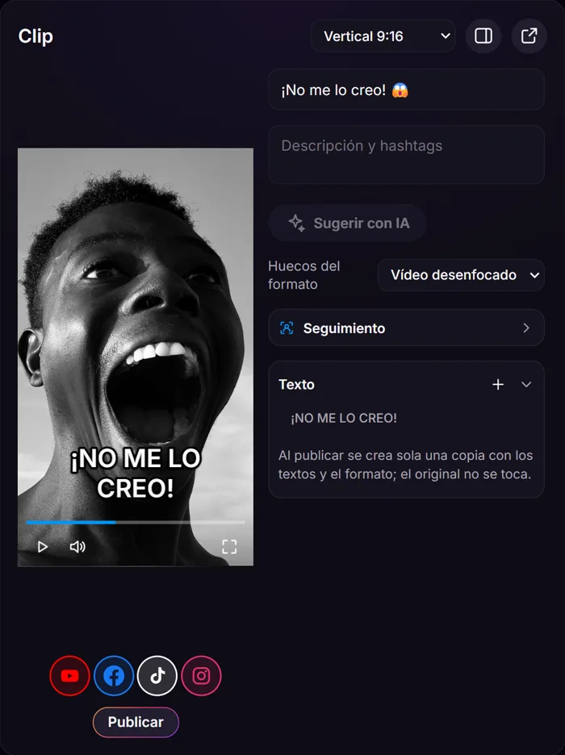
Recortar
Recorta y endereza cualquier fuente o vídeo con precisión.
- Proporciones libres, 1:1, 3:4, 4:3, 16:9 y 9:16
- Rotación con imán a 0°
- Se deshace todo con Ctrl+Z
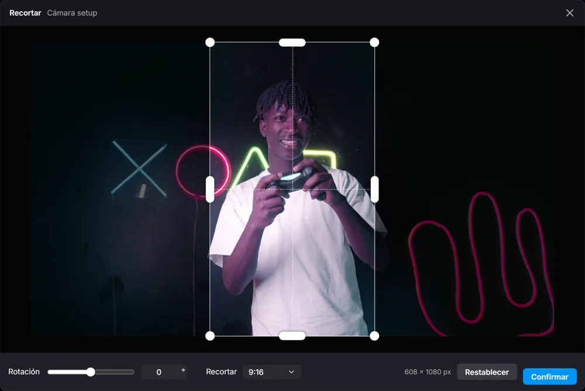
Seguimiento automático
FORZIN detecta a la persona y mueve el encuadre como un cámara profesional.
- Rostro, cuerpo superior o cuerpo completo
- Movimientos suaves, sin saltos ni vibraciones
- Todo se analiza en tu PC, sin enviar tu vídeo a ningún sitio
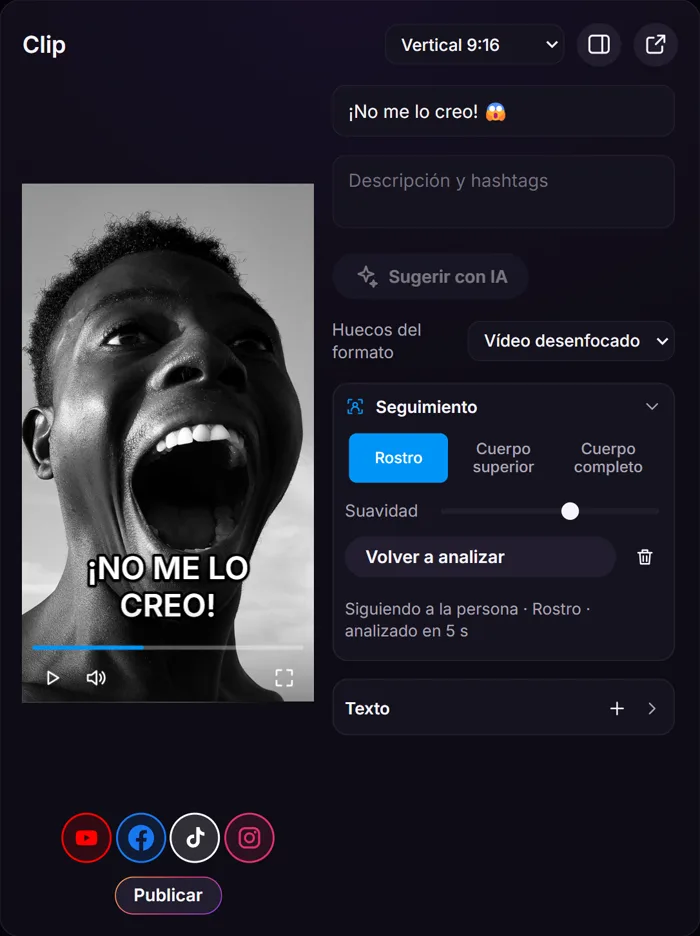
Publica donde está tu público
Cuatro redes, un solo botón
Conectas tus cuentas una vez y publicas el mismo clip en todas a la vez.
Privacidad
Tus clips se quedan contigo
FORZIN CLIPS no tiene servidores. Todo pasa en tu PC, y solo sale a Internet lo que tú decides publicar.
Cuentas cifradas
El acceso a tus redes se guarda cifrado con Windows. FORZIN nunca ve tus contraseñas.
Análisis en tu equipo
El seguimiento de personas, la transcripción y la IA de clips funcionan en tu PC: tu vídeo no se envía a ningún servicio de IA.
Sin rastreadores
Sin analíticas, sin publicidad y sin vender datos. Nada se publica sin tu permiso.
Pensado para creadores
Más clips, menos trabajo
Nunca pierdas una jugada
El búfer guarda los últimos minutos en segundo plano. Un botón y el momento es tuyo.
Panel de botones
Controla FORZIN, grabar, escenas, el sonido, los clips automáticos, transmitir y publicar desde un Stream Dock.
Subidas que no se rinden
Si se corta la conexión, la subida se reanuda sola desde donde iba, sin duplicar.
Deshaz lo que quieras
Ctrl+Z en el Studio y en los clips: formato, recorte, textos y encuadre.
Preguntas frecuentes
Lo que suelen preguntar
¿Cuándo sale FORZIN CLIPS?
El lanzamiento está previsto para enero de 2027. Pulsa «Avísame» y te contamos cuando esté lista.
¿En qué sistemas funciona?
En Windows 10 y Windows 11.
¿Necesito saber editar vídeo?
No. Eliges el formato, mueves el vídeo con el ratón, escribes tu texto y pulsas Publicar.
¿Mis vídeos se suben a algún servidor de FORZIN?
No. FORZIN CLIPS no tiene servidores. Tus clips solo salen de tu PC cuando los publicas, directamente en la red que elijas.
¿Puedo sacar clips del directo de otro canal?
Sí, de Kick, YouTube y Twitch, añadiendo el canal en FORZIN Móvil. Hazlo solo con creadores que te autoricen a clipear su contenido.
¿Qué es FORZIN Móvil?
Una app para tu celular que se conecta de forma segura con tu PC (sin abrir puertos de tu router): te avisa cuando un canal entra en directo, y desde ahí pulsas FORZIN, activas los clips automáticos y apruebas o publicas.
¿Por qué en TikTok llega como borrador?
FORZIN envía el clip a tu bandeja de TikTok. Allí escribes el texto final y lo publicas desde la app de TikTok.
¿Puedo desconectar mis cuentas?
Sí, cuando quieras, desde Configuración. Se borra el acceso guardado en tu PC.
Enero de 2027